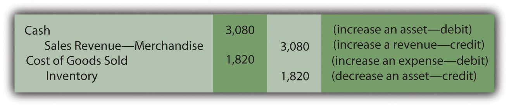
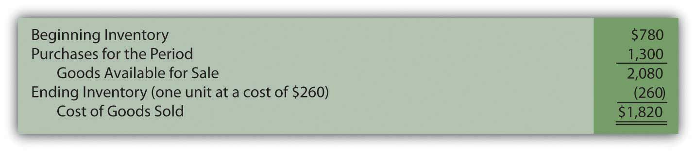
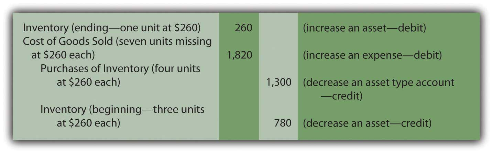

At the end of this section, students should be able to meet the following objectives:
Question: Rider Inc. (the sporting goods company) buys a bicycle for resell purposes and records the transaction using either a perpetual or periodic system. When should an inventory purchase be recorded? Assume, for example, that Builder Company (the manufacturer of this bicycle) is located in Wisconsin, whereas the retail store operated by Rider is in Kentucky. Delivery takes several days at a minimum. The precise moment for recording the transaction is probably not critical except near the end of the year when the timing of journal entries can impact the balances to be included on the financial statements.
To illustrate, assume this bicycle is ordered by Rider Inc. on December 27 of Year One. It is shipped by Builder Company from Wisconsin on December 29 of Year One and arrives at the retail store on January 4 of Year Two. When Rider produces its financial statements for Year One, should the inventory cost and related payable be included even though the bicycle was not physically received until Year Two?
Answer: Documents prepared in connection with shipments made from a seller to a buyer are normally marked with an “FOB” point. FOB stands for “Free On Board” (a traditional maritime term that has gained a wider use over the years) and indicates when legal title to property is transferred. That is the moment that the bicycle is assumed to be conveyed from one party to the other. It signifies the appropriate date for recording.
In this illustration, if Builder Company specifies that the sale of this bicycle is made “FOB shipping pointTerms of sale stipulating that legal title to shipped goods passes to the buyer at the time of shipment so that buyer is responsible for transportation costs and any damages or losses in transit.” and Rider Inc. agrees to this condition, the transaction occurs on December 29, Year One, when the bicycle leaves the seller. Consequently, both the asset and the liability appear on the December 31, Year One, balance sheet prepared by the buyer while Builder records sale revenue in Year One. However, if the contract states that the transaction is made “FOB destinationTerms of sale stipulating that legal title to shipped goods passes to the buyer when they arrive at the final destination so that the seller is responsible for transportation costs and any damages or losses in transit.,” the seller maintains legal ownership until the bicycle arrives at the store on January 4, Year Two. Neither party records the transaction until that time. Near the end of a reporting period, account balances can clearly be altered by the FOB designation.
The FOB point is often important for two other reasons.
Link to multiple-choice question for practice purposes: http://www.quia.com/quiz/2092922.html
Question: When a sale is made so that inventory is surrendered, the seller reports an expense that has previously been identified as “cost of goods sold” or “cost of sales.” For example, Best Buy reported “cost of goods sold,” for the year ended February 28, 2009, as $34.017 billion. When should cost of goods sold be determined?
To illustrate, assume that Rider Inc. begins the current year holding three Model XY-7 bicycles costing $260 each—$780 in total. During the period, another five units of this same model are acquired, again for $260 apiece or $1,300 in total.In this illustration, each bicycle in the company’s inventory has the same cost: $260. At this introductory stage, utilizing a single cost for all items eliminates a significant theoretical problem concerning the flow of costs, one that will be discussed in detail in a subsequent chapter.Eventually, a customer buys seven of these bicycles for her family and friends paying cash of $440 each or $3,080 in total. No further sales are made of this model. At the end of the period, a single bicycle remains (3 + 5 – 7). One is still in stock while seven have been sold. What is the proper method of recording the company’s cost of goods sold?
Answer: Perpetual inventory system. The acquisition and subsequent sale of inventory when a perpetual system is in use was demonstrated briefly in an earlier chapter. The accounting records maintain current balances so that officials are cognizant of (a) the amount of merchandise being held and (b) the cost of goods sold for the year to date. These figures are readily available in general ledger T-accounts. In addition, separate subsidiary ledger balances are usually established for the individual items in stock, showing the quantity on hand and its cost. When each sale is made, the applicable cost is reclassified from the inventory account on the balance sheet to cost of goods sold on the income statement. Simultaneously, the corresponding balance in the subsidiary ledger is lowered.
In this example, bicycles had been acquired by Rider Inc. and seven of them, costing $260 each (a total of $1,820), are sold to a customer for $440 apiece or $3,080. When a perpetual system is in use, two journal entries are prepared at the time of this transaction: one for the sale and a second to shift the cost of the inventory from asset to expense.
Figure 8.5 Journal Entries for Sale of Seven Model XY-7 Bicycles—Perpetual Inventory System
Removing $1,820 leaves an inventory balance of $260 ($780 + $1,300 – $1,820) representing the cost of the one remaining unit. The $1,260 difference between revenue and cost of goods sold for this sale ($3,080 minus $1,820) is the markup (also known as “gross profitDifference between sales and cost of goods sold; also called gross margin or markup.” or “gross margin”).
Periodic inventory systemAccounting system that does not maintain an ongoing record of all inventory items; instead, ending inventory is determined by a physical count so that a formula (beginning inventory plus purchases less ending inventory) can be used to determine cost of goods sold.. In contrast, a periodic system monitors the various inventory expenditures but makes no attempt to keep up with the merchandise on hand or the cost of goods sold during the year. Although cheap to create and operate, the information available to company officials is extremely limited.
At the time the sale of seven bicycles takes place, the first journal entry shown above is still made to recognize the revenue. However, the second entry is omitted if a periodic system is in use. Cost of goods sold is neither calculated nor recorded when a sale occurs. Thus, the inventory balance remains unadjusted throughout the year. Eventually, whenever financial statements are prepared, the amount to be reported for the asset (inventory) must be determined along with the expense (cost of goods sold) for the entire period.
Because updated totals are not maintained, the only accounts found in the general ledger relating to inventory show balances of $780 (beginning balance) and $1,300 (purchases).
| General Ledger Balances—Periodic Inventory System | |
|---|---|
| Inventory (beginning balance remains unadjusted during the period): | 3 units at $260 each or $780 |
| Purchases (total inventory costs incurred during the period; for this example, the balance here includes the invoice price, sales discount, transportation-in, assembly, and the like although they would have been recorded separately): | 5 units at $260 each or $1,300 |
Based on this information, total inventory available for to be sold by Rider Inc. during this period is eight units costing $2,080 ($780 plus $1,300).
When using a periodic system, cost of goods sold is computed as a prerequisite to preparing financial statements. Inventory on hand is counted (a process known as a “physical inventoryA count of the inventory on hand; necessary for reporting purposes when using a periodic system but also required for a perpetual system to ensure the accuracy of the records.”) and all units that are no longer present are assumed to have been sold. The amount of missing inventory is determined in this process. The figure is then reported as the company’s cost of goods sold for the period. Because complete inventory records are not available, any units that are lost, stolen, or broken cannot be separately derived. All merchandise that is no longer on hand is included within cost of goods sold.
In this example, a physical inventory count will be taken by the employees of Rider Inc. on or near the last day of the year so that financial statements can be produced. Because eight bicycles (Model XY-7) were available during the year but seven have now been sold, one unit—costing $260—remains (if no accident or theft has occurred). This amount is the inventory figure that appears in the asset section of the balance sheet.
Cost of goods sold is then computed by the following formula.
Figure 8.6 Computation of Cost of Goods Sold in a Periodic SystemThe Purchases figure here could have also been shown by displaying the various cost components, such as the invoice price, purchases discount, transportation-in, and assembly. That breakdown is important for internal decision making and control but probably of less interest to external parties.
In a periodic system, three costs are used to arrive at the amount reported as a company’s cost of goods sold. It is important to understand how each of these figures is derived.
Link to multiple-choice question for practice purposes: http://www.quia.com/quiz/2092885.html
Question: In a perpetual inventory system, cost of goods sold is determined at the time of each sale. Figures retained in a subsidiary ledger provide the cost of the specific item being surrendered so that an immediate reclassification from asset to expense can be made.
With a periodic system, cost of goods sold is not calculated until financial statements are prepared. The beginning inventory balance (the ending amount from the previous year) is combined with the total acquisition costs incurred this period. Merchandise still on hand is counted and its cost is determined. All missing inventory is assumed to reflect the cost of goods sold. When a periodic inventory system is in use, how are both the ending inventory and cost of goods sold for the year physically entered into the accounting records? These figures have not been recorded on an ongoing basis so the general ledger must be updated to agree with the reported balances.
Answer: In the bicycle example, opening inventory for the period was comprised of three items costing $780. Another five were then bought for $1,300. The total cost of these eight units is $2,080. Because the financial impact of lost or broken units cannot be ascertained in a periodic system, the entire $2,080 is assigned to either ending inventory (one unit at a cost of $260) or cost of goods sold ($780 + $1,300 – $260 or $1,820). There is no other account in which to record inventory costs in a periodic system. The goods are assumed to either be on hand or have been sold.
For a periodic inventory system, a year-end adjusting entry is set up so that these computed amounts are reflected as the final account balances.
Figure 8.7 Adjusting Entry—Recording Inventory and Cost of Goods Sold as Determined in Periodic Inventory SystemAs mentioned previously, if separate T-account balances are established for cost components such as transportation-in, assembly costs, and the like, they must be included in this entry rather than just a single Purchases figure.
Note that the reported costs on the financial statements ($260 for ending inventory and $1,820 for cost of goods sold) are identical under both perpetual and periodic systems. However, as will be demonstrated in the next chapter, this agreement does not always exist when inventory items are acquired during the year at differing costs.
The legal conveyance of inventory from seller to buyer establishes the timing for recording and is based on the FOB point specified. This designation also identifies the party responsible for transportation costs and items damaged while in transit. In contrast, the recording of cost of goods sold depends on the inventory system used. For a perpetual system, the reclassification of an item from inventory to expense occurs at the time of each sale. A periodic system makes no attempt to monitor inventory totals; thus, cost of goods sold is unknown until the preparation of financial statements. The expense is found by adding the beginning inventory to the purchase costs for the period and then subtracting ending inventory. A year-end adjusting entry then updates the various general ledger accounts.